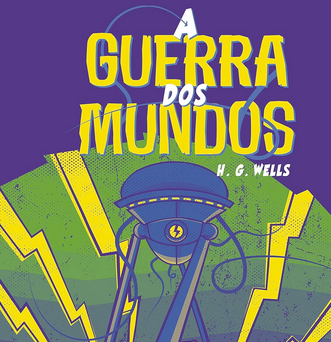

Cem Anos de SolidãoNeste, que é um dos maiores clássicos de Gabriel García Márquez, o prestigiado autor narra a incrível e triste história dos Buendía - a estirpe de solitários para a qual não será dada "uma segunda oportunidade sobre a terra" e apresenta o maravilhoso universo da fictícia Macondo, onde se passa o romance. É lá que acompanhamos diversas gerações dessa família, assim como a ascensão e a queda do vilarejo. Para além dos artifícios técnicos e das influências literárias que transbordam do livro, ainda vemos em suas páginas o que por muitos é considerado uma autêntica enciclopédia do imaginário, num estilo que consagrou o colombiano como um dos maiores autores do século XX. |
Flores para AlgernonCom excesso de erros no início do romance, os relatos de Charlie revelam sua condição limitada, consequência de uma grave deficiência intelectual, que ao menos o mantém protegido dentro de um “mundo” particular – indiferente às gozações dos colegas de trabalho e intoxicado por tragédias familiares. Porém, ao participar de uma cirurgia revolucionária que aumenta o seu QI, ele não apenas se torna mais inteligente que os próprios médicos que o operaram, como também vira testemunho de uma nova realidade: ácida, crua e problemática. Se o conhecimento é uma benção, Daniel Keyes construiu um personagem complexo e intrigante, que questiona essa sorte e reflete sobre suas relações sociais e sua própria existência. E tudo isso acontece ao lado de Algernon, seu rato de busca e a primeira cobaia bem-sucedida no processo cirúrgico. |

O Fantasma da ÓperaUm homem deformado se esconde nos subterrâneos de um teatro e acaba se apaixonando por uma jovem atriz. Histórias de fantasmas e assassinatos cercam o personagem de mistério e completam o clima deste clássico da literatura. |
DunaNum futuro distante, a casa Atreides, liderada pelo duque Leto, se prepara para uma jornada até o planeta desértico de Arrakis. Também conhecido como “Duna”, esse lugar cercado de mistérios e perigos é a única fonte da substância mais valiosa do cosmos. O duque precisará se aliar aos nativos, os fremen, se quiser impedir que a casa Harkonnen assuma o controle do planeta. E é lá que seu filho, Paul, conhecerá seu destino. O jovem pode ser a chave de um plano traçado há séculos e uma peça importante no jogo de poderes do império. |

Torto AradoNas profundezas do sertão baiano, as irmãs Bibiana e Belonísia encontram uma velha e misteriosa faca na mala guardada sob a cama da avó. Ocorre então um acidente. E para sempre suas vidas estarão ligadas ― a ponto de uma precisar ser a voz da outra. Numa trama conduzida com maestria e com uma prosa melodiosa, o romance conta uma história de vida e morte, de combate e redenção. |

A MetamorfoseA metamorfose é a mais célebre novela de Franz Kafka e uma das mais importantes de toda a história da literatura. Sem a menor cerimônia, o texto coloca o leitor diante de um caixeiro-viajante - o famoso Gregor Samsa - transformado em inseto monstruoso. A partir daí, a história é narrada com um realismo inesperado que associa o inverossímil e o senso de humor ao que é trágico, grotesco e cruel na condição humana - tudo no estilo transparente e perfeito desse mestre inconfundível da ficção universal. |

Harry Potter e a Pedra FilosofalHarry Potter é um garoto cujos pais, feiticeiros, foram assassinados por um poderosíssimo bruxo quando ele ainda era um bebê. Ele foi levado, então, para a casa dos tios que nada tinham a ver com o sobrenatural. Pelo contrário. Até os 10 anos, Harry foi uma espécie de gata borralheira: maltratado pelos tios, herdava roupas velhas do primo gorducho, tinha óculos remendados e era tratado como um estorvo. No dia de seu aniversário de 11 anos, entretanto, ele parece deslizar por um buraco sem fundo, como o de Alice no país das maravilhas, que o conduz a um mundo mágico. Descobre sua verdadeira história e seu destino: ser um aprendiz de feiticeiro até o dia em que terá que enfrentar a pior força do mal, o homem que assassinou seus pais. |

Harry Potter e a Câmara SecretaPara Harry, garoto sem família e rejeitado pelos tios, Hogwarts é tudo. Portanto, quando colegas, e até professores, começam a desconfiar que ele tem alguma participação nas tragédias que estão acontecendo no colégio, a situação fica mais complicada. Até Hermione, amiga querida de Potter, é atacada pelo monstro e se transforma numa estátua. Só resta ao nosso herói tentar resolver o mistério por conta própria. Mais uma vez, ele enfrenta o terrível bruxo das trevas e... O final é surpreendente e muito divertido. |

Harry Potter e o Prisioneiro de AzkabanAs aulas estão de volta a Hogwarts e Harry Potter não vê a hora de embarcar no Expresso a vapor que o levará de volta à escola de bruxaria. Mais uma vez suas férias na rua dos Alfeneiros, 4, foi triste e solitária. Tio Válter Dursley estava especialmente irritado com ele, porque seu amigo Rony Weasley tinha lhe telefonado. E ele não aceitava qualquer ligação de Harry com o mundo dos mágicos dentro de sua casa. A situação piorou ainda mais com a chegada de tia Guida, irmã de Válter. Harry já estava acostumado a ser humilhado pelos Dursley, mas quando tia Guida passou a ofender os pais de Harry, mortos pelo bruxo Voldemort, ele não agüentou e transformou-a num imenso balão. Irritado, fugiu da casa dos tios, indo se abrigar no Beco Diagonal. |

Harry Potter e o Cálice de FogoAs férias de verão vão se arrastando e Harry Potter mal pode esperar pelo início do ano letivo. É o seu quarto ano na Escola de Magia e Bruxaria de Hogwarts, e há feitiço a serem aprendidos, poções a serem preparadas e aulas de Adivinhação, entre outras, a serem assistidas. Harry anseia por tudo isso. Porém, muitos outros acontecimentos surpreendentes já estão em marcha... |

Harry Potter e a Ordem da FênixHarry Potter vai começar seu quinto ano na Escola de Magia e Bruxaria de Hogwarts. Está desesperado para retornar à escola e descobrir por que seus melhores amigos, Rony e Hermione, andaram tão misteriosos durante as férias. Porém, o que o jovem bruxo está prestes a descobrir nesse novo ano em Hogwarts vai provocar uma grande reviravolta em seu mundo. |

Harry Potter e o Enigma do PríncipeHarry Potter e o enigma do Príncipe dá continuidade à saga do jovem bruxo Harry Potter a partir do ponto onde o livro anterior parou, o momento em que fica provado que o poder de Voldemort e dos Comensais da Morte, seus seguidores, cresce mais a cada dia, em meio à batalha entre o bem e o mal. A onda de terror provocada pelo Lorde das Trevas estaria afetando, até mesmo, o mundo dos trouxas (não-bruxos), e sendo agravada pela ação dos dementadores, criaturas mágicas aterrorizantes que "sugam" a esperança e a felicidade das pessoas. Harry, que acabou de completar 16 anos, parte rumo ao sexto ano na Escola de Magia e Bruxaria de Hogwarts, animado e, ao mesmo tempo, apreensivo com a perspectiva de ter aulas particulares com o professor Dumbledore, o diretor da escola e o bruxo mais respeitado em toda comunidade mágica. |

Harry Potter e as Relíquias da MorteDesta vez, Harry Potter foi encarregado de uma tarefa obscura, perigosa e aparentemente impossível: localizar e destruir os Horcruxes remanescentes de Voldemort. Potter nunca esteve tão sozinho nem teve de enfrentar um futuro tão sombrio. Porém, de algum modo, Harry deve encontrar dentro de si próprio a força para completar a tarefa que lhe foi dada: ele deve sair do ambiente acolhedor e seguro da Toca para seguir sem temor nem hesitação pelo inexorável caminho que lhe foi traçado... |

1984Winston, herói de 1984, último romance de George Orwell, vive aprisionado na engrenagem totalitária de uma sociedade completamente dominada pelo Estado, onde tudo é feito coletivamente, mas cada qual vive sozinho. Ninguém escapa à vigilância do Grande Irmão, a mais famosa personificação literária de um poder cínico e cruel ao infinito, além de vazio de sentido histórico. |
Admirável Mundo NovoEm uma sociedade organizada segundo princípios estritamente científicos, Bernard Marx, um psicólogo, sente-se inadequado quando se compara aos outros seres de sua casta. Ao descobrir uma “reserva histórica” que preserva costumes de uma sociedade anterior – muito semelhante à do leitor – Bernard vai perceber as diferenças entre esta civilização e a sua – e a partir de um sentimento de inconformismo ele desafiará o mundo. A história de Bernard se passa em um ambiente em que a literatura, a música e o cinema só têm a função de solidificar a alienação; um universo que louva o avanço da técnica, a produção em série, a uniformidade contra a diversidade. |

Água VivaClarice Lispector tinha o hábito de dormir cedo, acordar de madrugada e ficar sentada na sua sala pensando, fumando e ouvindo a Rádio Relógio, acompanhada apenas de seu cachorro, Ulisses. Nesses momentos de solidão, nasceram muitas de suas obras, que, depois, ela escreveria com a máquina de escrever apoiada sobre as pernas. "Escrevo-te sentada junto de uma janela aberta no alto do meu ateliê", diz ela em determinado trecho do romance Água viva, em que a autora se confunde com a personagem, uma solitária pintora que se lança em infinitas reflexões sobre o tempo, a vida e a morte, os sonhos e visões, as flores, os estados da alma, a coragem e o medo e, principalmente, a arte da criação, do saber usar as palavras num jogo de sons e silêncios que se combinam, a especialidade da própria Clarice. |
A Revolução dos BichosA Revolução dos Bichos' é uma fábula sobre o poder. Narra a insurreição dos animais de uma granja contra seus donos. Progressivamente, porém, a revolução degenera numa tirania ainda mais opressiva que a dos humanos. Escrita em plena Segunda Guerra Mundial e publicada em 1945 depois de ter sido rejeitada por várias editoras, essa pequena narrativa causou desconforto ao satirizar ferozmente a ditadura stalinista numa época em que os soviéticos ainda eram aliados do Ocidente na luta contra o eixo nazifascista. |

Cleópatra e FrankesteinCleo, uma pintora inglesa de vinte e quatro anos, ainda está tentando encontrar o seu lugar na intensa Nova York, quando, alguns meses antes de seu visto de estudante vencer, conhece Frank. Vinte anos mais velho, o publicitário Frank tem uma vida repleta de todos os excessos que faltam à de Cleo. Ele oferece a ela a chance de ser feliz, a liberdade para pintar e a oportunidade de conquistar um visto permanente. Ela proporciona a Frank uma vida regada à beleza e à arte – e a esperança de ser uma razão para que ele coloque fim às bebedeiras. Mas o casamento por impulso muda a vida deles de forma irreversível, assim como a daqueles que estão próximos a eles, de uma maneira absolutamente imprevisível. Cada capítulo explora a vida de Cleo, Frank e de um elenco inesquecível de amigos e familiares mais próximos enquanto eles crescem e amadurecem. |
Correio FemininoEm Correio Feminino, mais do que a escritora consagrada, é a "jornalista feminina" que se apresenta ao leitor. A Clarice Lispector que aceita o convite do cronista Rubem Braga e se aventura na elaboração de páginas dedicadas às mulheres no periódico Comício, criado em 1952, protegida sob o pseudônimo de Tereza Quadros. A Clarice que, no início dos anos 60, dá conselhos de beleza e dicas de como manter uma personalidade cativante para conquistar o bem-amado, dessa vez com o pseudônimo de Helen Palmer, nas páginas do Correio da Manhã. Ou ainda a ghost writer de Ilka Soares na coluna "Só para mulheres", publicada noDiário da Noite. Em todas elas, a escritora vasculha o universo da mulher, em conselhos e reflexões. Correio feminino, que reproduz através de fac-símiles os textos publicados na imprensa em sua versão original, é, acima de tudo, uma deliciosa viagem no tempo. |

CosmosCosmos, escrito por Carl Sagan, é uma obra clássica de divulgação científica que traça a evolução do universo ao longo de 14 bilhões de anos. O livro aborda temas como a origem da vida, o funcionamento do cérebro humano, astronomia, história e filosofia, sempre conectando ciência com cultura. Com linguagem acessível, Sagan convida o leitor a explorar o espaço e refletir sobre o papel da humanidade no cosmos. Publicado em 1980, Cosmos continua sendo uma das obras mais influentes da ciência popular, celebrando o conhecimento e a curiosidade como partes essenciais da experiência humana. |
|

A Guerra dos MundosE se de repente marcianos invadissem a Terra e começassem a eliminar todos os homens que encontrassem pela frente? E se esse fosse apenas o primeiro passo para dizimar a civilização? O mundo, como conhecido até então, deixaria de existir. As cidades, as organizações políticas e as leis de nada valeriam. Sobreviver se tornaria quase impossível. Este é o universo criado por H. G. Wells em A guerra dos mundos, uma das histórias de ficção científica mais influentes da literatura. |
A Hora da EstrelaMacabéa, a nordestina, cumpre seu destino sem reclamar. Feia, magra, sem entender muito bem o que se passa à sua volta, é maltratada pelo namorado Olímpico e pela colega Glória. Os dois são o seu oposto: o metalúrgico Olímpico sonha alto e quer ser deputado, e Glória, carioca da gema e gorda, tem família e hora certa para comer. Os dois acabam juntos, enquanto Macabéa, sozinha, continua a viver sem saber por que está vivendo, sem pensar no futuro nem sonhar com uma vida melhor. Até que um dia, seguindo uma recomendação de Glória, procura a cartomante Carlota, uma ex-prostituta do Mangue, que revela a Macabéa toda a inutilidade de sua vida. Mas também enche-a de esperança, prevendo a paixão por um estrangeiro rico, com quem ela iria se casar. |
InvisívelOs habitantes da calma Iping têm toda razão de não conseguirem falar sobre outra coisa. O desconhecido que se hospedou na pensão local está sempre coberto da cabeça aos pés com o rosto inteiramente envolto em bandagens. Além disso, chegou trazendo um verdadeiro laboratório portátil e um rastro de mistério que aumenta ainda mais quando crimes começam a acontecer e quando se descobre que o homem é... Invisível. Sucesso desde a publicação, em 1897, o Homem Invisível mistura ficção científica e humor, além de ser também um belo livro sobre os laços entre a humanidade e o indivíduo, incompreensão e solidão. |

ItDurante as férias escolares de 1958, em Derry, pacata cidadezinha do Maine, Bill, Richie, Stan, Mike, Eddie, Ben e Beverly aprenderam o real sentido da amizade, do amor, da confiança e... do medo. O mais profundo e tenebroso medo. Naquele verão, eles enfrentaram pela primeira vez a Coisa, um ser sobrenatural e maligno que deixou terríveis marcas de sangue em Derry. Quase trinta anos depois, os amigos voltam a se encontrar. Uma nova onda de terror tomou a pequena cidade. Mike Hanlon, o único que permanece em Derry, dá o sinal. Precisam unir forças novamente. A Coisa volta a atacar e eles devem cumprir a promessa selada com sangue que fizeram quando crianças. Só eles têm a chave do enigma. Só eles sabem o que se esconde nas entranhas de Derry. O tempo é curto, mas somente eles podem vencer a Coisa. |
Laços de FamíliaSão treze contos, hoje tidos como clássicos. Entre eles, os festejadíssimos “Amor”, “O crime do professor de Matemática”, “O búfalo” e “Feliz aniversário”. Neles os personagens são sempre surpreendidos por uma modalidade perturbadora do insólito, no meio da banalidade de seus cotidianos. Clarice cria situações onde uma revelação, que desconstrói e ameaça à realidade, desvela a existência e aponta para uma apreensão filosófica da vida. Em Laços de família, Clarice aprofunda sua técnica narrativa em uma abordagem quase fenomenológica. |

Memórias Póstumas de Brás CubasRevolucionário e provocativo, o romance rompe com tradições literárias e sintetiza a crítica machadiana à elite brasileira da época. Um dos personagens mais populares da nossa literatura, Brás Cubas é um defunto-autor que dedica sua obra ao verme que primeiro roeu as frias carnes de seu cadáver. O protagonista narra suas memórias, intercalando episódios, delírios, reflexões e teorias, não poupando ninguém do seu olhar crítico e expondo as atitudes mesquinhas que teve em vida. |
Labirinto do FaunoNo ano de 1944, Ofélia e a mãe cruzam uma estrada de terra que corta uma floresta longínqua ao norte da Espanha, um lugar que guarda histórias já esquecidas pelos homens. O novo lar é um moinho de vento tomado pela escuridão e pela crueldade do capitão Vidal e seus soldados, dispostos a tudo para exterminar os rebeldes que se escondem na mata. Mas o que eles não sabem é que a floresta que tanto odeiam também abriga criaturas mágicas e poderosas, habitantes de um reino subterrâneo repleto de encantos e horrores, súditos em busca de sua princesa há muito perdida. Uma princesa que, segundo os sussurros das árvores, finalmente retornou ao lar. |
Morro dos Ventos UivantesEsta é uma história de amor e obsessão. E de purgação, crueza, devastação. No centro dos acontecimentos estão a voluntariosa e irascível Catherine Earnshaw e seu irmão adotivo Heathcliff. Rude nos modos e afetos, humilhado e rejeitado, ele aprende a odiar; mas com Catherine desenvolve uma relação de simbiose, paixão e também perversidade. Nada destruirá a essência desse laço – porém quando ela se casa com outro homem, por convenções sociais, as consequências são irreparáveis para todos em volta. |

Príncipe CruelPassaram dez anos desde que Jude e as irmãs foram raptadas pelo assassino dos seus pais e levadas para Faerie — o reino das fadas. Jude sente um verdadeiro fascínio pela beleza destes seres mágicos e imortais, mesmo sabendo que também são malévolos e impiedosos, e continua a sonhar em pertencer a este mundo encantado. Mas o povo das fadas despreza mortais e, para se tornar cavaleira e receber um lugar na Corte, Jude tem de arriscar a sua mortalidade e desafiar o príncipe Cardan, o filho mais novo e mais cruel do Rei Altíssimo. O príncipe odeia Jude e tudo fará para se ver livre dela. Tudo! É então que Jude se envolve nas intrigas e atividades de espionagem do palácio, acabando por descobrir o seu próprio talento para derramar sangue. E quando o seu sonho está prestes a tornar-se realidade, o destino de Faerie fica por um fio, obrigando Jude a fazer uma inesperada e perigosa aliança para salvar as irmãs e o reino que tanto a rejeita. |

Pessoas NormaisConnell e Marianne estudam juntos em uma escola no interior da Irlanda, mas fingem não se conhecer. Ele é popular, ela é solitária, e uma relação secreta surge entre eles. Anos depois, na universidade em Dublin, os papéis se invertem: Marianne se adapta bem, enquanto Connell se sente deslocado. Ao longo do tempo, eles vivem uma relação marcada por encontros e desencontros, tentando lidar com seus próprios problemas pessoais. A história acompanha o vínculo profundo entre os dois, mostrando como, apesar das tentativas de se afastarem, eles continuam sendo parte essencial da vida um do outro. |

Quarto de DespejoQuarto de Despejo é um diario. Escrito dia a dia. Caderno e mais caderno cheios pela letra de uma mulher. Recheados do cotidiano autêntico, vivido. A luta pela sobrevivência como ela é, em todos os "quartos de despejo" do mundo, à margem das grandes cidades. Quarto de Despejo é mais que isso. É reportagem, é romance, é história de um grupo humano em certa época do mundo. É a voz do povo, patética, lírica, sentimental, forte e inesquecível. O duro cotidiano dos favelados ganha uma dimensão universal, na linguagem simples do diário de uma catadora de lixo. |
Todas as CartasPonto alto de Todas as cartas, o conjunto de correspondências inéditas endereçadas aos amigos escritores tem entre os destinatários João Cabral de Melo Neto, Rubem Braga, Lêdo Ivo, Otto Lara Resende, Paulo Mendes Campos, Nélida Piñon, Lygia Fagundes Telles, Natércia Freire e Mário de Andrade. As correspondências foram organizadas por décadas – dos anos 1940 a 1970 – e contam com notas da biógrafa Teresa Montero, que contextualizam o material no tempo, no espaço e nas inúmeras citações a personalidades e referências culturais. |